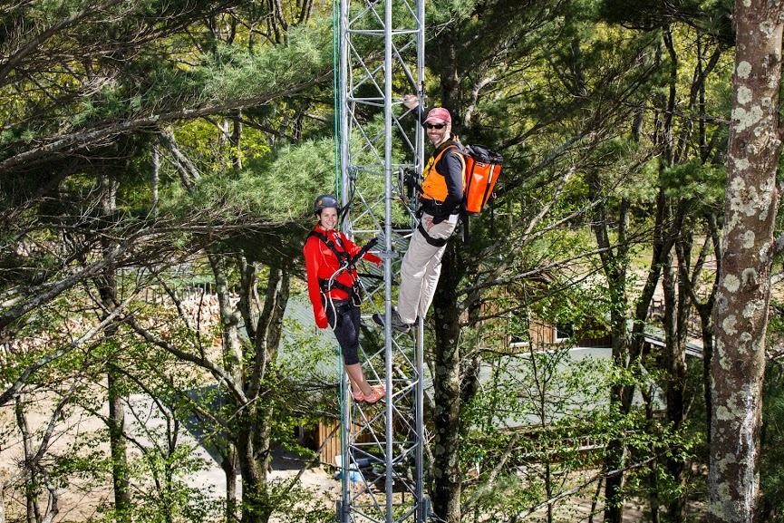
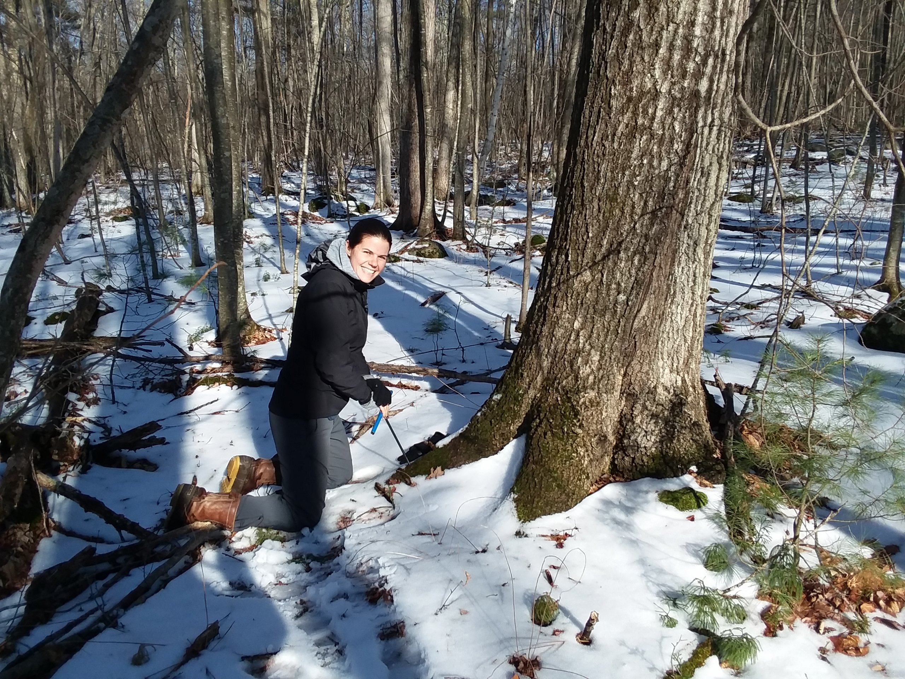
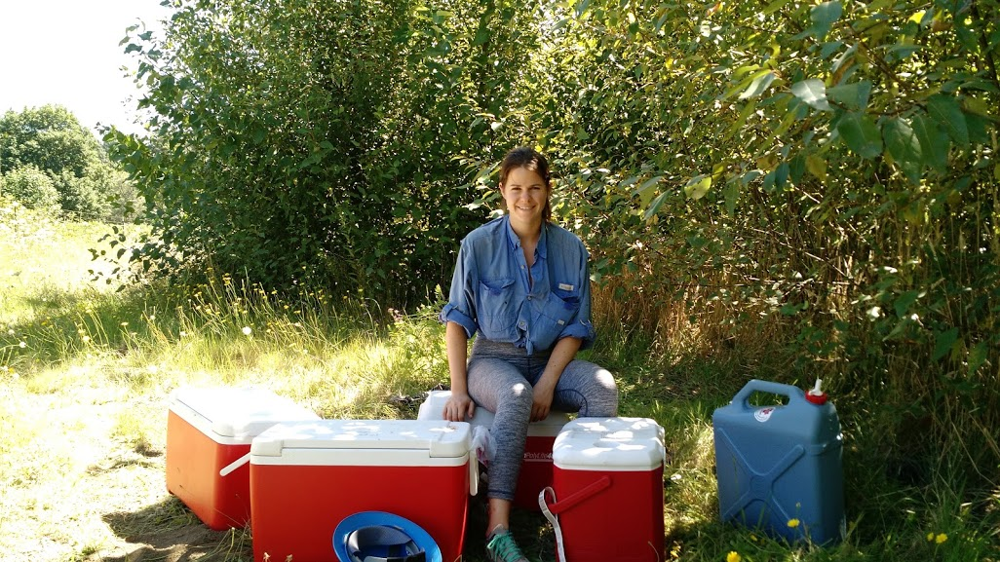
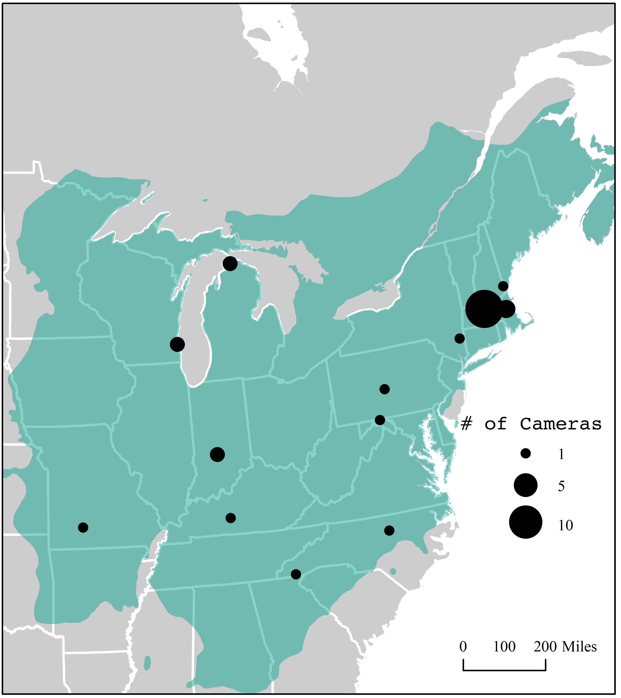
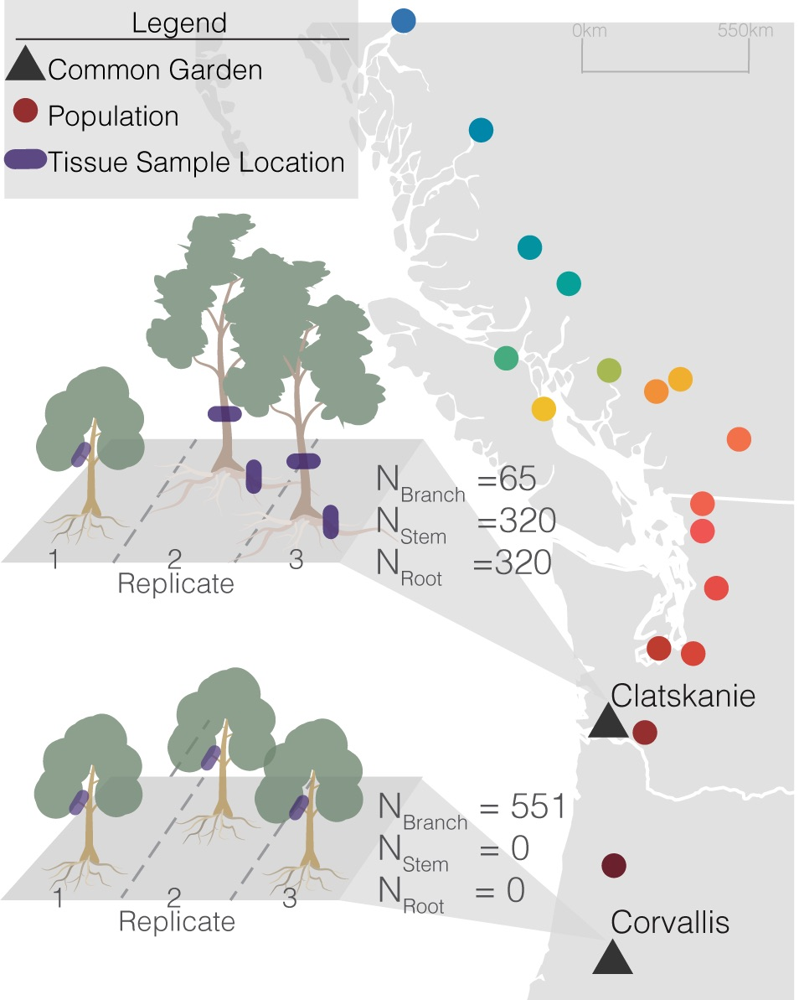
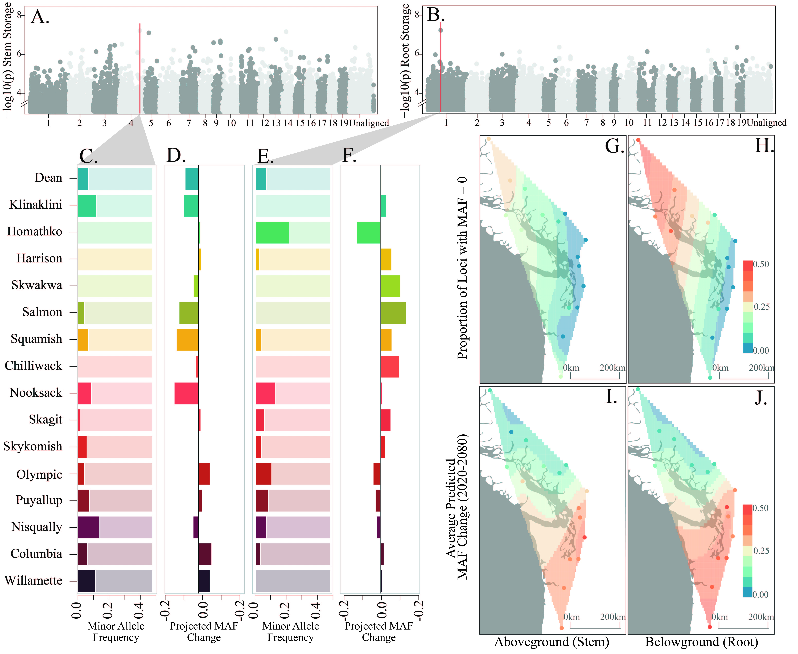
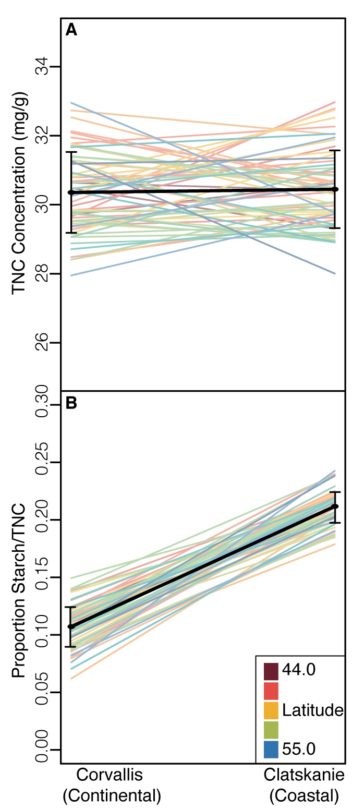

Current Research




Overview
Forests provide us with countless ecosystem services, yet today are facing unprecedented levels of stress; pest and disease outbreaks, frequent and intense disturbance, fragmentation and development, and a warming climate. A central challenge for understanding how forests will fare in the long-term is how to link processes occurring at the cellular level to those occurring across the whole forest.
To date, researchers have focused on how environment drives variation in plant phenotypes, or sets of observable traits. However, these efforts have often uncovered conflicting patterns across scales of biological organization, making it difficult to identify emergent properties, or rules, that would aid prediction. This is partly because phenotypes are the product of an individual’s genes (G), environment (E), and the interaction between the two (GxE). Thus, past efforts have almost completely ignored how genetics also impact phenotypic variation.
This oversight is particularly problematic as the genetic component of phenotypic variation is not insignificant. Many traits that enable adaptation are also highly heritable, meaning much of the variation measured at a site can be attributed to genetics, and there is a growing recognition that genotype-by-environment interactions are pervasive, indicating that individuals may frequently respond differently and non-linearly to environmental cues based on their genetic composition.
This large gap in our understanding of what forms plants’ phenotypes motivates my interdisciplinary research program. I utilize tools from plant ecophysiology, population and functional genomics, and mechanistic modeling to generate insights about phenotypic variation (G, E, GxE) in forest ecosystems, and scale patterns from the gene to ecosystem.
Study Systems
Black Cottonwood (Populus trichocarpa) : a fast-growing riverine species, native to the pacific northwest. It is the first model genomic species for tree research. I work in transplanted gardens in Oregon, maintained by the Department of Energy. All 1000+ cottowood genotypes located in the garden are clonally replicated and have full genome sequences available via the JGI phytozome website.
Red Oak (Quercus rubra) : a dominant forest species across eastern North America, red oak is emerging as a new model system for population genomics research in trees.
Untangling the environmental and genetic drivers of phenological timing in red oak to improve predictions

Forests absorb a large proportion of carbon emissions each year via photosynthesis, making them a key player in mitigating global change. Thus, knowing when trees start and end photosynthesis each year is essential to predicting future warming. Extensive research has shown that the timing of leaf-out in trees is governed by both genetics and environment. However, no study to date has combined our understanding of these two drivers and their interaction into one framework. This study will address this need by elucidating how environment and genetics interact to alter leaf-out timing in the North American species red oak (Quercus rubra). Broader impacts include broadening participation of students from underrepresented groups and the generation of new genomic and phenotypic resources that will improve the ability to predict leaf-out timing and provide guidance for setting up assisted migration conservation programs aimed to speed the movement of locally adapted individuals northward in pace with environmental change. Training objectives for the Fellow include genomics, gene expression profiling, ecophysiology, and process-based modeling.
This project will leverage a wide-spread system of phenological cameras (phenocams) in a novel way to quantify the genetic and environmental drivers of leaf-out variation in red oak and integrate this into a process-based model. Specific objectives include: 1) genetically sequencing red oak individuals growing in phenocam “viewsheds”. These sequences will be used to derive population structure and develop a set of candidate loci associated with phenological timing; 2) experimentally manipulating twigs collected after budset from a subset of individuals to parse out the environmental versus genetic drivers of variation; 3) collecting gene expression data via transcriptomics to further refine candidate loci; and, 4) modifying existing process-based model structures to test hypotheses regarding how the inclusion of population structure, genetic variation, and local adaptation can improve model performance and alter our predictions. [In Progress]
Genetic & Environmental Drivers of Variation in Nonstructural Carbohydrate Storage

The storage of nonstructural carbohydrates is a trait that has been hypothesized to provide trees with long-term resilience to extremes. Nonstructural carbohydrates are the sugars, primarily glucose, fructose, and sucrose, and starch that are produced by trees during photosynthesis that are not immediately used for growth or reproduction, but rather are stored in the ray and parenchyma cells of a tree’s woody tissues (branch, stem, roots). Like an animal’s fat stores, these labile sugars and starch represent the total energetic stores of the tree and serve as a vital buffer for plants in stressful times when demand (growth, defense, metabolism, etc.) exceeds current photosynthetic supply, such as during the dormant season or in response to environmental stress/disturbance.
1) Combined ecophysiology and predictive climate modeling with analyses of genomic variation to determine if sugar and starch storage, energy reserves for trees under extreme conditions, have the heritable variation and genetic diversity necessary to evolve in response to climate change within populations of black cottonwood (Populus trichocarpa). Despite current patterns of local adaptation, and extensive range-wide heritable variation in storage, we demonstrate that adaptive evolution in response to climate change will be limited by a lack of heritable variation within northern populations and by a need for extreme genetic changes in southern populations. Our method can help design more targeted species management interventions and highlights the power of using genomic tools in ecological prediction to scale from molecular to regional processes to determine the ability of a species to respond to future climates. [Published]

1) Are NSC storages actively stored? This project finally establishes that trees do have the innate, genetic capacity to regulate the amount they allocate to storage and can pass this ability onto their offspring. This finding alters our understanding of carbon allocation in trees and ultimately affects our predictions of forests’ ability to absorb carbon dioxide emissions into the future. [In Review]
1) E and GxE in NSC storage - found high E response in the proportion of stores residing as starch and high GxE in the total amount of stores between gardens. [In Review]

1)NSC legacy response to drought - Measured NSC stores in 5 temperate tree species in the years before and after a drought event in the eastern United States. [In Prep]
1)How insect defoliation drove oak trees to carbon starvation in MA - measure NSC levels across a natural experimental gradient of intensity and frequnecy of gypsy moth defoliation in MA [In prep]